The spark
I was walking through Milan when a FAI poster on the street caught my eye — colours pulled me in long enough to read it. It was advertising a Josef Albers exhibition at Villa Panza in Varese. I'd never been particularly drawn to Albers' work before, but something about that moment of catching my attention made me curious. I went the next day.
The exhibition was beautiful. But coming out of it, I kept thinking about that poster. It had done its job — it got me through the door — but I started wondering what a different approach could look like. Specifically: what would it take to make someone who'd never heard of Albers genuinely stop and want to know more? I decided to redesign it as a personal exercise.
Mapping the brief
I started by mapping all the information the poster needed to carry. Primary info — the things that absolutely had to be there. Secondary info — institutional credits, partnerships, sponsors. Both real, but they don't deserve the same hierarchy.
Primary info — Who / What / Where / When
- FAI (Fondo per l'Ambiente Italiano)
- Villa Panza
- Josef Albers
- Image from Homage to the Square
- Meditations (exhibition name)
- Varese
- 09.04.2026 – 10.01.2027
Secondary info — partnerships & credits
- In partnership with the Josef & Anni Albers Foundation
- Con il patrocinio di: Regione Lombardia
- In collaborazione con: Comune di Varese
- Sponsor: Barcamat, Seda
Then the harder question: in what order should a viewer's eye absorb that information? I traced the ideal gaze path step by step.
Colour from the artwork
What stops you — exactly the way it stopped me on the street.
JOSEF ALBERS
The name, big — the first thing you read after the colour pulls you in.
A short payoff line
For people who don't know him: one sentence explaining who he is and why he matters.
FAI
An institutional anchor — signalling this is something worth your time.
"Meditations"
The exhibition title — what you came here to learn about.
Villa Panza, Varese
Where to go.
Dates
When to go.
Building the visual
Artworks
I went back through photos from the exhibition. Albers' most recognisable series is Homage to the Square — nested squares of carefully calibrated colour, each painting a small experiment in how colours change each other when they sit side by side. The series is huge, and choosing which paintings to feature was its own design decision.
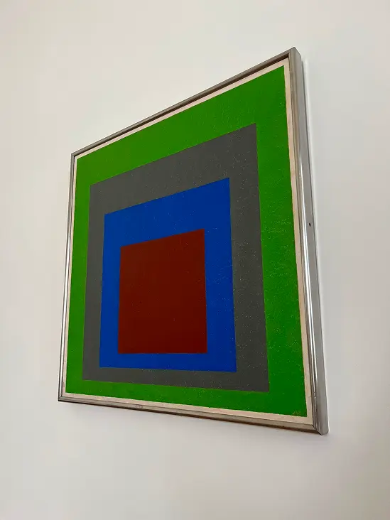
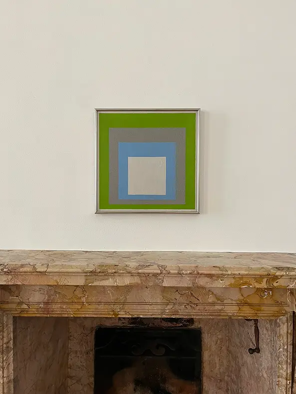
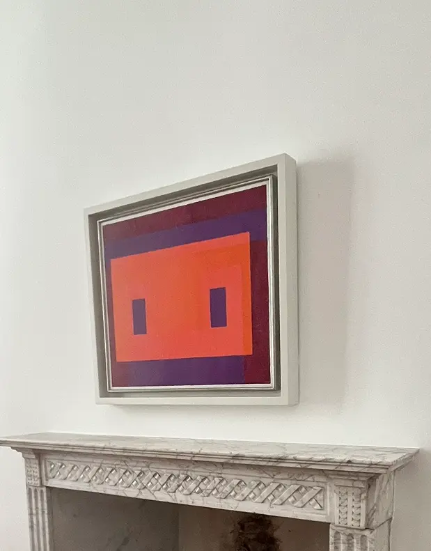
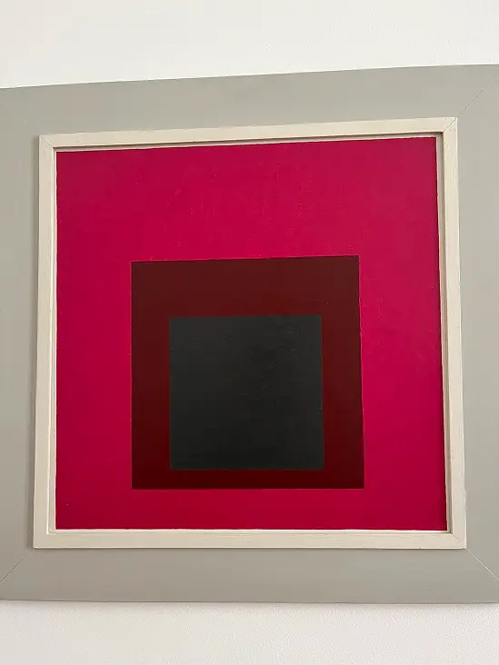
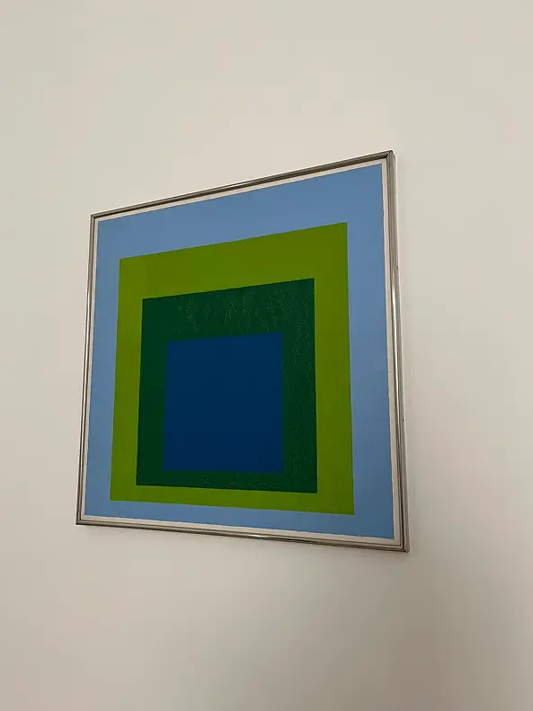
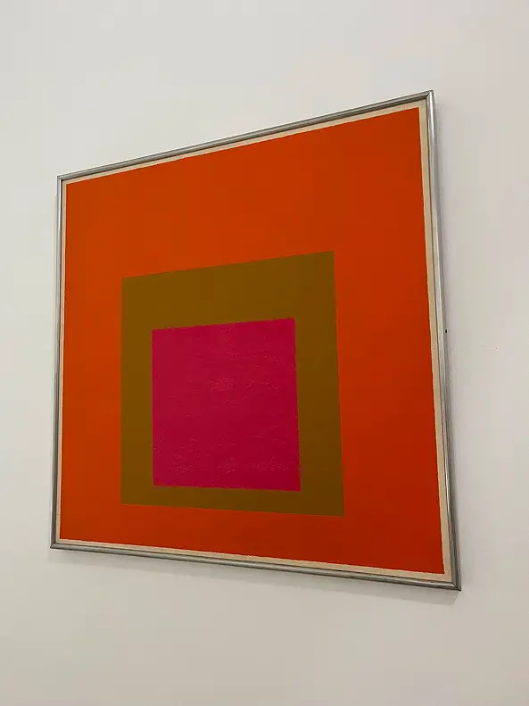
I narrowed it down to three paintings that, together, capture the heart of what makes Albers' work striking — the way colour vibrates, recedes, and amplifies depending on what's next to it.
Typography
Albers himself designed a typeface — Architype Albers — built entirely from squares and triangles, perfectly aligned to his geometric ethos. I tried to recreate it by hand, just to understand its logic from the inside.
Architype Albers itself was too restrictive for the kind of poster I wanted to make — too pure, too narrow in personality. I went looking on Adobe Fonts and found a curated collection called The Bauhaus Look. From that collection, I narrowed down to three candidates:
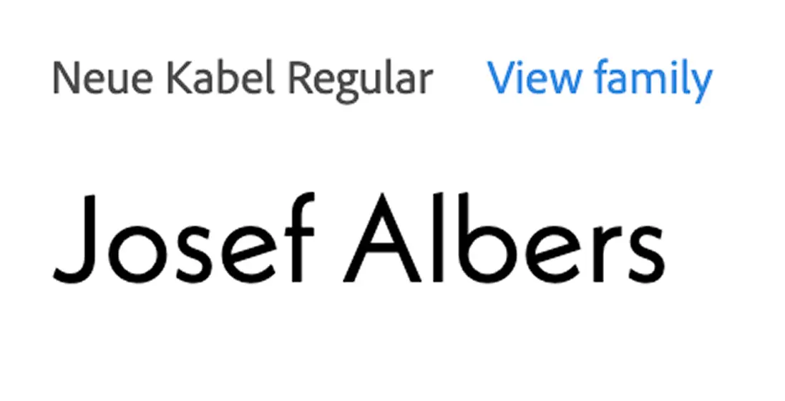
Neue Kabel Regular
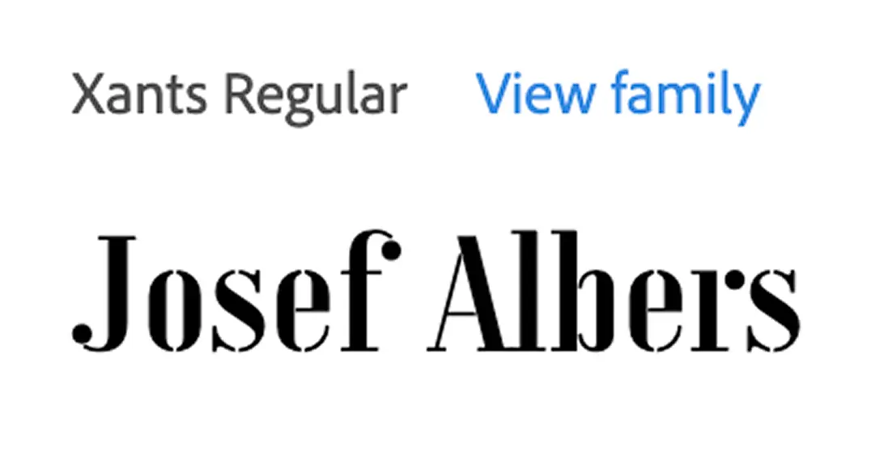
Xants Regular — chosen
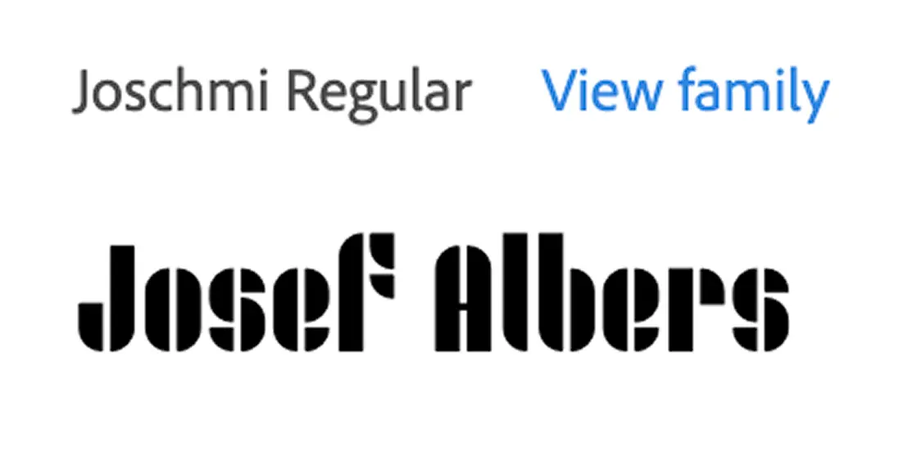
Joschmi Regular
I chose Xants Regular for the title — readable, with stencil cuts that quietly echo Architype Albers' geometric DNA, and a sharp elegance the other two didn't have. Aktiv Grotesk for everything else, because the body text needed to disappear and let the colour do the work.
I also drafted a payoff line for the title — "Making colours interact" — to give context to anyone who didn't know Albers' work. I ended up cutting it. The poster was already asking the eye to take in colour, name, institution, exhibition title, location, and dates. Adding one more line of text, even a good one, would have tipped it into overload. Restraint was the decision.
Layout
Six layout iterations, trying to balance the three artworks, the typography, and the institutional information without burying any of it.
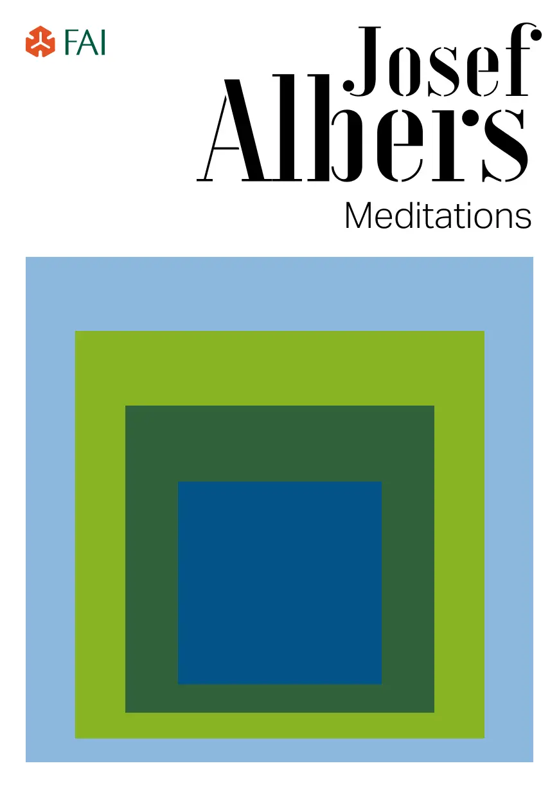
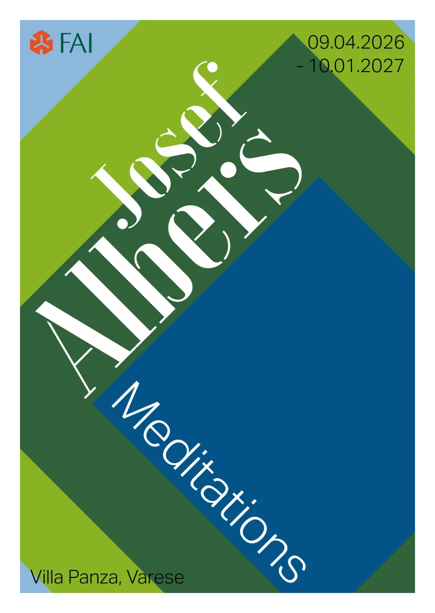
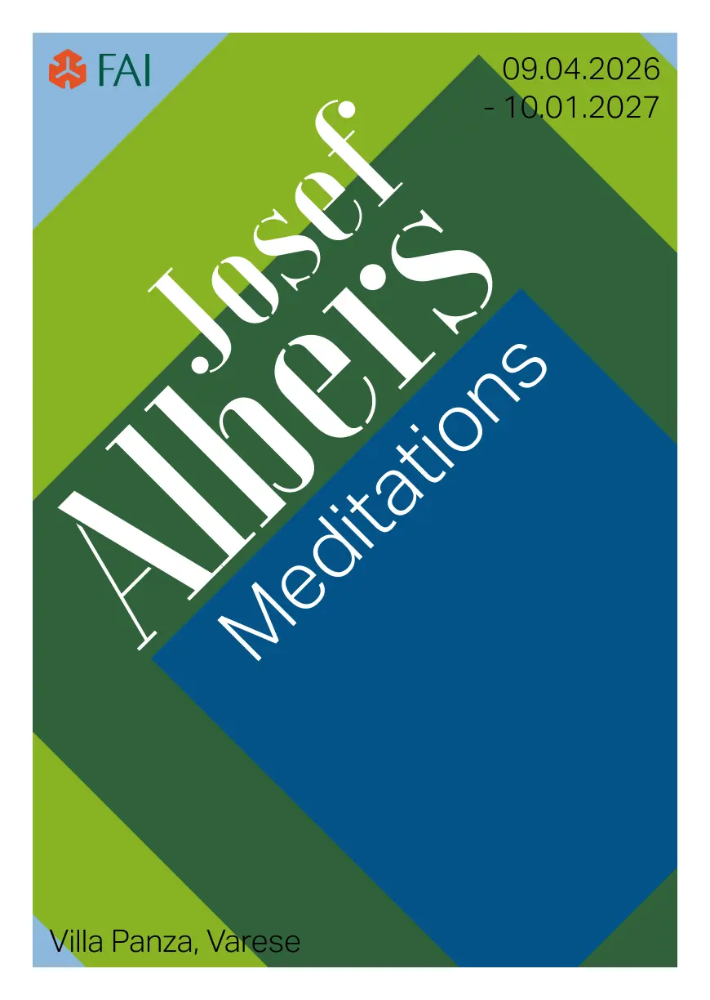
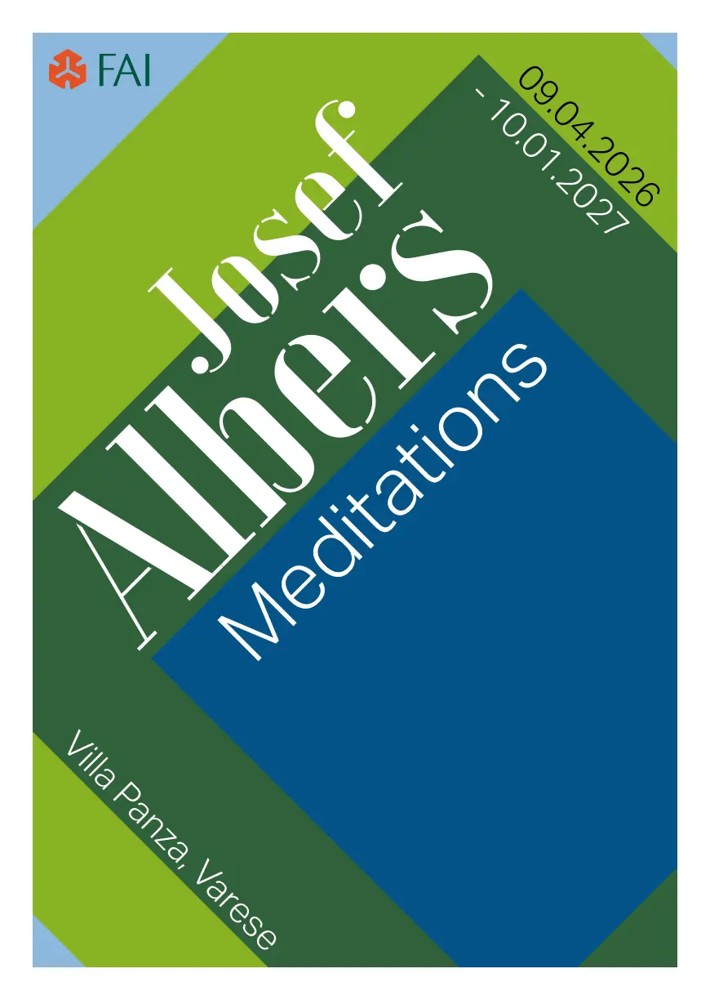
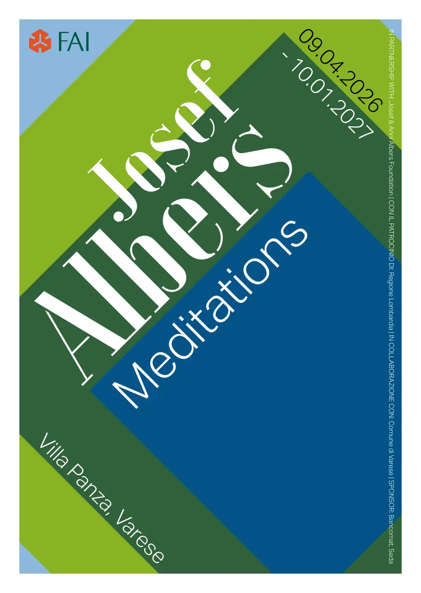
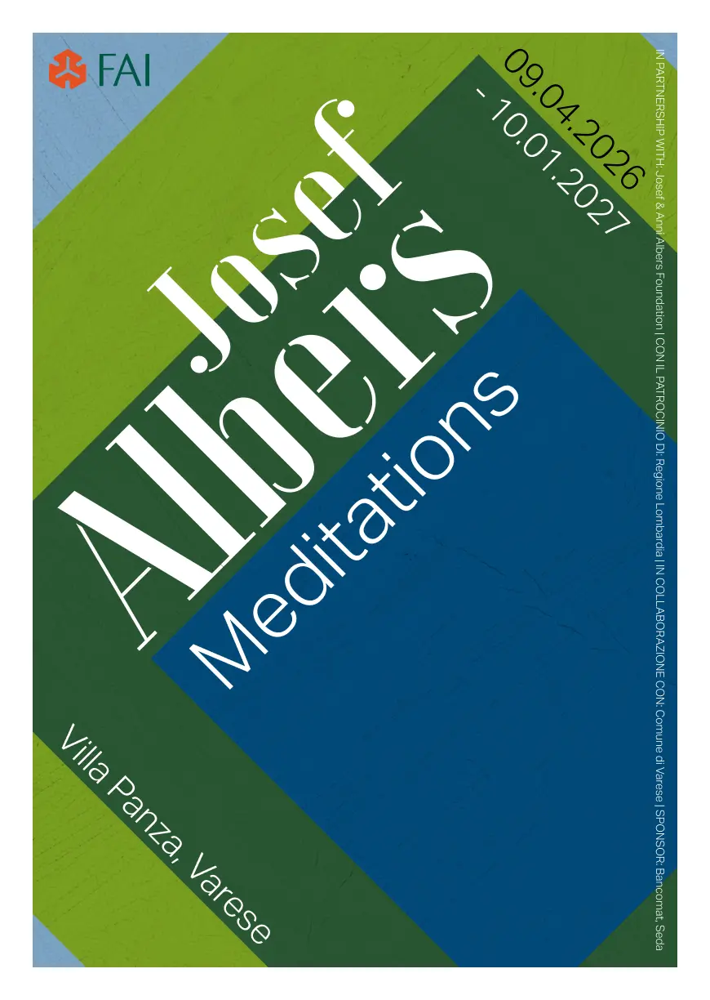
The poster
The final piece. To see it in context, I generated a wall mockup using Figma Weavy with ChatGPT Images 2.0 — and as a little workflow detail, I used Claude to help me write the prompt that would keep the generation focused and limit unnecessary variations.